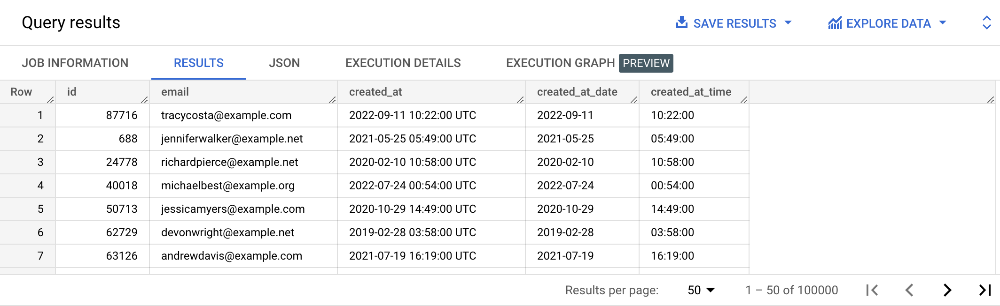

All values stored in a relational database column must have the same type. There are different types used for text values, numeric values, dates etc.
| Name | Description |
|---|---|
| BOOL | Boolean values are represented by the keywords TRUE and FALSE (case-insensitive). They are used to define conditions in the WHERE and HAVING clauses, and with the != and = comparison operators. |
| Numeric types | Numeric types include the following types, used for different levels of precision:
|
| STRING | Variable-length character (Unicode) data. Used for text values (including single characters). |
| DATE | The date type represents a logical calendar date, independent of time zone. Usual format is 'YYYY-MM-DD'. |
| DATETIME | A datetime value represents a date and time, as they might be displayed on a watch, independent of time zone. It includes the year, month, day, hour, minute, second, and subsecond. Usual format is YYYY-MM-DD HH:MM:SS. |
| TIME | A time value represents a time of day, as might be displayed on a clock, independent of a specific date and time zone. Range is 00:00:00 to 23:59:59.999999. |
| TIMESTAMP | A timestamp value represents an absolute point in time, independent of any time zone or convention such as Daylight Savings Time, with microsecond precision. A timestamp is typically represented internally as the number of elapsed microseconds since a fixed initial point in time. Range is 0001-01-01 00:00:00 to 9999-12-31 23:59:59.999999 UTC. |
| INTERVAL | An interval object represents duration or amount of time. Interval is composed of three independent parts:• [sign]Y-M: Years and Months. [sign]D: Days. [sign]H:M:S.F: Hours, Minutes, Seconds and Subseconds. Canonical format is [sign]Y-M [sign]D [sign]H:M:S[.F]. |
| STRUCT | Also referred to as RECORD. Container of ordered fields each with a type (required) and field name (optional). For example we could be dealing with cars, defined by a set of fields (brand_name, price, color etc.) |
| ARRAY | Ordered list of zero or more elements of any non-array type. For example, we could be dealing with a fleet of cars. |
In some cases, some data can be converted from one type to another. For example, from STRING to NUMERIC.
Google Standard SQL for BigQuery supports conversion functions. These data type conversions are explicit, but some conversions can happen implicitly.
https://cloud.google.com/bigquery/docs/reference/standard-sql/conversion_functions
The main conversion functions are:
CASTSAFE_CASTWith the CAST function, we can for example, convert a number to a string.
Type the query below in the BigQuery console and run it. Don't copy paste. 😉
SELECT CAST(250 AS STRING) AS string_from_text;
Example results:
| string_from_text |
|---|
| 250 |
It's not visible on the screen, but the date internally went from 250 to '250'.
👉 Learn more on the BigQuery conversion rules and type coercion page from the official documentation.
{% include practice_problems_intructions.html %}bigquery-public-data.thelook_ecommerce.users
The created_at column in the TheLook Ecommerce dataset is actually not of the DATE type, but is instead of the TIMESTAMP type.
Write a query that will convert the created_at column to the DATE, and TIME types.

SELECT id,
email,
created_at,
CAST(created_at AS DATE) AS created_at_date,
CAST(created_at AS TIME) AS created_at_time
FROM bigquery-public-data.thelook_ecommerce.users;